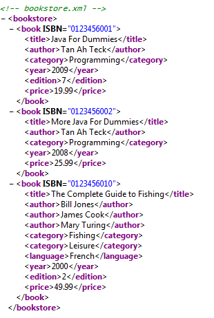

<!DOCTYPE html PUBLIC "-//W3C//DTD XHTML 1.0 Strict//EN" "http://www.w3.org/TR/xhtml1/DTD/xhtml1-strict.dtd">
<html xmlns="http://www.w3.org/1999/xhtml">
<head>
<meta http-equiv="Content-Type" content="text/html; charset=utf-8" />
<title>Java Programming Tutorial - Java &amp; XML</title>
<link href="../css/programming_notes.css" rel="stylesheet" type="text/css" />
<link rel="shortcut icon" href="../favicon.ico" type="image/x-icon" /></head>

<body>

<!-- Begin the outermost container division -->
<div id="container">

<!-- print header -->
<script type="text/javascript" src="../scripts/header.js"></script>

<!-- begin main content division -->
<div id="content">

<h1>Java  Programming</h1>
<h2>Java &amp; XML</h2>

<h3>Introduction to XML</h3>

<p>XML (eXtensible Markup Language), like HTML, is a <em>markup language</em> for marking up the structure of a text document. It is a subset of Standard General Markup Language (SGML). XML is not a programming language like Java or C#. It is developed and maintained by World-Wide Web Consortium (W3C) @ <a href="http://www.w3c.org">www.w3c.org</a>.  (W3C also maintains specifications for HTTP, HTML, XHTML, CSS, among others.)</p>

<p>XML is a family of technologies, which includes:</p>
<ul>
<li>XML: the markup language itself.</li>
<li> DTD (Document Type Definition) and XML Schema: define the structure of an XML document,</li>
<li>XSL (XML Style sheet Language), XSLT (XSL Transformation), XSL-FO (XSL Formatting Objects): for presentation.</li>
<li>XPath, XLink, XPointer, XQuery: for locating, linking and query document.</li>
<li>DOM (Document Object Model), SAX (Simple API for XML): XML parser.</li>
<li>XQL (XML Query Language), XSQL: for querying databases.</li>
<li>and more...</li>
</ul>

<p>I assume that you have some basic understanding of the HTML.</p>

<h4>Why XML?</h4>
<p>The HTML's original objective of letting the document author to focus on the contents of the document and leave the actual appearance of the document to the browser, has gone out of control.  Many HTML documents have more markup tags than the contents. Worse still, many of the markup tags are dealing with the appearance of the document (e.g., &lt;font&gt;) rather than the contents (e.g., &lt;h1&gt;).</p>
<p>HTML has grown into a huge and complex language, with more than hundred markup tags in its latest version.
On one hand, despite these many tags, specific applications (such as e-commerce and Mathematical formula) are asking for more tags, 
On the other hand, many tags are not used frequently by many applications and can be removed.
Furthermore, many of the HTML tags (e.g., <code>&lt;font&gt;</code>, <code>&lt;span&gt;</code>, <code>&lt;div&gt;</code>) are meant for presentation rather than the contents.</p>

<h4>Objectives of XML</h4>
<p>XML aims to:</p>
<ul>
<li>Focus on the content rather than the appearance of the documents.</li>
<li>Resolve the conflicting demands on tags: on one hand, specialized applications need more tags; on the other hand, many tags are not frequently used and can be removed.</li>
</ul>

<p>XML adapts the following principles to meet the above objectives:</p>
<ul>
<li>XML has no pre-defined tags: The authors of the documents creates their own tags to suit their applications.  Hence, XML is flexible and extensible.</li>
<li>XML has strict syntax:  HTML is sloppy and loose in syntax. HTML browsers need to correct sloppy HTML scripts, resulting in complex and heavy browser.  By tightening the syntax, XML browser is smaller, lighter and faster.</li>
</ul>

<h4>Applications for XML</h4>
<p>XML is useful for these applications:</p>
<ul>
<li>Data exchange between computer systems:  XML is platform- and computer-language-neutral and text-based, which greatly facilitates exchanging of data between two computer systems.  For example, two e-commerce partners can use an agree-upon XML format to exchange purchase orders and invoices electronically, and directly fed into their computer systems.</li>
<li>Data storage: Unlike databases which is platform- and language-dependent, XML provide a platform-neutral mean for data storage.</li>
<li>Specialized publishing: XML can be used for marking up documents for specialized applications, such as e-commerce, scientific documents, Mathematical formula, e-books, among others.</li>
</ul>

<h3>XML Documents</h3>

<p>XML (eXtensible Markup Language) is a <em>markup language</em> for marking up the structure of a text document. Unlike HTML:</p>
<ul>
<li>XML has no pre-defined tags.  You create your own tags for your specific applications. XML tag names are supposed to be self-describing.</li>
<li>XML's tags are used to mark the <em>meaning</em> of the content, rather than the appearance or presentation of the content.</li>
<li>XML has strict syntax rules, and is case sensitive.</li>
</ul>

<p>Like HTML, XML uses <em>markup tags</em> to markup so-called <em>elements</em>. There are two kinds of elements:</p>
<ol>
<li>Non-empty element (or container element): The content is enclosed within a pair of  matching start-tag and  end-tag, in the form of <code>&lt;<em>element-name</em>&gt;<em>contents</em>&lt;/<em>element-name</em>&gt;</code>. The end-tag is preceded by a forward slash &quot;<code>/</code>&quot; and has the same name as the start-tag. For example, <code>&lt;title&gt;Java for dummies&lt;/title&gt;</code>.</li>
<li>Empty element (or standalone element): Empty element has no data content. You can  use a shorthand notation by closing the  start tag with a forward slash “<code>/</code>” and  omit the end tag, in the form of <code>&lt;<em>empty-element-name</em> /&gt;</code>. Note that it has the same meaning as <code>&lt;<em>empty-element-name</em>&gt;&lt;/<em>empty-element-name</em>&gt;</code>. For examples, <code>&lt;out_of_print&gt;</code>, <code>&lt;preferred_customer&gt;</code>.</li>
</ol>

<p>An XML document exhibits a <em>tree</em> structure. It has one (and only one) <em>root element</em>, and the elements are properly nested. XML documents are text-based, human readable, and are meant to be self-describing. The following is an example of an XML document for a bookstore:</p>

<table class="table-program">
<tr>
<td width="300px">
<pre class="code-listing">
&lt;?xml version=&quot;1.0&quot; encoding=&quot;UTF-8&quot;?&gt;
&lt;!-- bookstore.xml --&gt;
&lt;bookstore&gt;
  &lt;book ISBN=&quot;0123456001&quot;&gt;
    &lt;title&gt;Java For Dummies&lt;/title&gt;
    &lt;author&gt;Tan Ah Teck&lt;/author&gt;
    &lt;category&gt;Programming&lt;/category&gt;
    &lt;year&gt;2009&lt;/year&gt;
    &lt;edition&gt;7&lt;/edition&gt;
    &lt;price&gt;19.99&lt;/price&gt;
  &lt;/book&gt;
  &lt;book ISBN=&quot;0123456002&quot;&gt;
    &lt;title&gt;More Java For Dummies&lt;/title&gt;
    &lt;author&gt;Tan Ah Teck&lt;/author&gt;
    &lt;category&gt;Programming&lt;/category&gt;
    &lt;year&gt;2008&lt;/year&gt;
    &lt;price&gt;25.99&lt;/price&gt;
  &lt;/book&gt;
  &lt;book ISBN=&quot;0123456010&quot;&gt;
    &lt;title&gt;The Complete Guide to Fishing&lt;/title&gt;
    &lt;author&gt;Bill Jones&lt;/author&gt;
    &lt;author&gt;James Cook&lt;/author&gt;
    &lt;author&gt;Mary Turing&lt;/author&gt;
    &lt;category&gt;Fishing&lt;/category&gt;
    &lt;category&gt;Leisure&lt;/category&gt;
    &lt;language&gt;French&lt;/language&gt;
    &lt;year&gt;2000&lt;/year&gt;
    &lt;edition&gt;2&lt;/edition&gt;
    &lt;price&gt;49.99&lt;/price&gt;
  &lt;/book&gt;
&lt;/bookstore&gt;
</pre></td>
<td>
<pre class="code-explanation">
XML declaration
XML comment
Root element start-tag (one and only one root)
Child element start-tag (with an attribute in name=&quot;value&quot; pair)
&nbsp;
&nbsp;
&nbsp;&nbsp;&nbsp;(proper nesting of child elements)
&nbsp;
&nbsp;
&nbsp;
Child element end-tag
Second child element start-tag&nbsp;
&nbsp;
&nbsp;
&nbsp;
&nbsp;
&nbsp;
Second child element end-tag
Third child element start-tag
&nbsp;
&nbsp;
&nbsp;
&nbsp;
&nbsp;
&nbsp;
&nbsp;
&nbsp;
&nbsp;
&nbsp;
Third child element end-tag
Root element end-tag
</pre></td>
</tr>
</table>

<p>In the above example, <code>&lt;bookstore&gt;</code> is the <em>root</em> element. It has  one child element <code>&lt;book&gt;</code>, which in turn has several children (<code>&lt;title&gt;</code>, <code>&lt;author&gt;</code>, <code>&lt;category&gt;</code>, etc).


Some of the elements such as <code>&lt;author&gt;</code> may appear more than once to carry multiple values. The element start-tag may contain so-called <em>attributes</em> in the form of <code>attribute_name=&quot;attribute_value&quot;</code> pairs. The following figure shows the appearance of opening an XML document on a web browser. Observe the tree structure. You can click on the &quot;+&quot; and &quot;-&quot; sign to expand and collapse a portion of the tree.
</p>

<div align="center"></div>

<p>Another example of an XML address book is as follows:</p>
<pre class="code-listing">
&lt;?xml version=&quot;1.0&quot; encoding=&quot;ISO-8859-1&quot;?&gt;
&lt;!-- addressbook.xml --&gt;
&lt;address_book&gt;
  &lt;person&gt;
     &lt;name&gt;Tan Ah Teck&lt;/name&gt;
     &lt;tel type=&quot;mobile&quot; preferred=&quot;yes&quot;&gt;98888888&lt;/tel&gt;
     &lt;tel type=&quot;home&quot;&gt;68888888&lt;/tel&gt;
     &lt;email preferred=&quot;yes&quot;&gt;tan@abc.com&lt;/email&gt;
     &lt;email&gt;teck@xyz.com&lt;/email&gt;
     &lt;address type=&quot;home&quot;&gt;1 Happy Ave&lt;/address&gt;
  &lt;/person&gt;
  &lt;person&gt;
     &lt;name&gt;Mohd Ali&lt;/name&gt;
     &lt;tel type=&quot;mobile&quot; preferred=&quot;yes&quot;&gt;97777777&lt;/tel&gt;
     &lt;tel type=&quot;office&quot;&gt;67777777&lt;/tel&gt;
     &lt;email&gt;ali@abc.com&lt;/email&gt;
  &lt;/person&gt;
&lt;/address_book&gt;
</pre>


<h4>XML Syntax</h4>

<p>There are currently two versions of XML specifications: XML 1.0 and XML 1.1, maintained by <a href="http://www.w3c.org">W3C</a>.</p>

<ul>
<li><em>Element</em> is the basic unit of an XML document. Each XML element must have a <em>start-tag</em> and <em>end-tag</em>. The tags are enclosed in angle brackets, e.g., <code>&lt;title&gt;...&lt;/title&gt;</code>. Unlike HTML, closing tag is mandatory. <em>Empty-element tag</em> (or <em>standalone tag</em>) must be properly closed, e.g., <code>&lt;out_of_print /&gt;</code>.</li>

<li>An XML element includes its start-tag, enclosing character data and/or child elements, and the end-tag.</li>

<li>The element's name can contain letters, numbers, and other Unicode characters, but NOT white spaces. The name must start with a letter, underscore &quot;<code>_</code>&quot;, or colon &quot;<code>:</code>&quot;, but cannot start with certain reserved words such as <code>xml</code>.</li>
<li>Each XML document must have one (and only one) <em>root</em> element.</li>
<li>XML elements must be <em>properly nested</em>. For example, <code>&lt;book&gt;&lt;title&gt;...&lt;/book&gt;&lt;/title&gt;</code> is incorrectly nested.</li>

<li>XML  is <em>case sensitive</em>. For example, <code>&lt;book&gt;</code> and <code>&lt;Book&gt;</code> are considered two different tags.</li>

<li>The start-tag may contain <em>attributes</em> in the form of <code>attribute_name=&quot;attribute_value&quot;</code> pairs. Attributes are used to provide extra information about the element. Unlike HTML, the <code>attribute_value</code> of an XML attribute must be properly quoted (either in double quotes or single quotes).</li>

<li>Certain characters, such as <code>&lt;</code>, <code>&gt;</code>, which are used in XML syntax, must be replaced with so-called <em>entity references</em> in the form of <code>&amp;<em>name</em>;</code>. XML has five pre-defined entity references: <code>&amp;lt;</code> (<code>&lt;</code>), <code>&amp;gt;</code> (<code>&gt;</code>), <code>&amp;amp;</code> (<code>&amp;</code>), <code>&amp;quot;</code> (<code>&quot;</code>), and <code>&amp;apos;</code> (<code>'</code>).</li>
<li>XML comment takes the form of <code>&lt;!-- comment texts --&gt;</code>, which is the same as HTML.</li>
<li>Unlike HTML, white spaces in the text are preserved. New-line is represented by a Line Feed (<code>LF</code>) character (<code>0AH</code>).</li>
</ul>

<h4>Well-Form XML Documents</h4>
<p>An XML document is <em>well-formed</em>, if its structure meets the XML specification, i.e., it is syntactically correct. A well-formed XML document exhibits a tree-like structure, and can be processed by an XML processor. For example, the tree structure of the &quot;bookstore.xml&quot; is as follows:</p>


<h4>Structure of XML Documents</h4>
<p>An XML document comprises of the following basic units:</p>
<ul>
<li>Element: includes the start-tag, the enclosing character data and/or nested elements, and the end-tag.</li>
<li>Attribute: defined in the start-tag to provide extra information about the element, in the form of <code>attribute_name=&quot;attribute_value&quot;</code>.</li>
<li>Entities References: in the form of <code>&amp;<em>name</em>;</code>, e.g., <code>&amp;lt;</code> (<code>&lt;</code>), <code>&amp;gt;</code> (<code>&gt;</code>), <code>&amp;amp;</code> (<code>&amp;</code>), <code>&amp;quot;</code> (<code>&quot;</code>), and <code>&amp;apos;</code> (<code>'</code>).</li>
<li>Character References: in the form of <code>&amp;#<em>decimal-number</em>;</code> or <code>&amp;#x<em>hex-code</em>;</code> for replacing any Unicode character, e.g., both <code>&amp;#169;</code> and <code>&amp;#xA9;</code> can be used for copyright symbol ©.</li>
<li>PCDATA (Parsed Character Data):  Text between start-tag and end-tag that will be examined by the parser for entity references and nested elements.</li>
<li>CDATA (Character Data): Text between start-tag and end-tag that will NOT be examined by the parser for entity references and nested tags.</li>
</ul>

<h4>CDATA Section</h4>
<p>As mentioned, special characters (such as &quot;<code>&lt;</code>&quot;, &quot;<code>&gt;</code>&quot;, &quot;<code>&amp;</code>&quot;) must be referenced through pre-defined entities (such as <code>&amp;lt;</code>, <code>&amp;gt;</code>, <code>&amp;apos;</code>).  If your texts contain many special characters, it is cumbersome to replace all of them.  Instead a &quot;CDATA (character data) section&quot; can be used.CDATA sections are delimited by &quot;<code>&lt;[CDATA[</code>&quot; and &quot;<code>]]&gt;</code>&quot;.  The XML processor ignores all the markup within the CDATA section except &quot;<code>]]&gt;</code>&quot;. CDATA sections are used for program codes, such as JavaScript or Perl codes.</p>

<h4>Processing Instruction (PI)</h4>
<p>Processing Instruction (PI) tells an application to perform a specific task.  It is a <em>command</em> to XML parser or an application program that uses the XML document.  PI can be used for inserting non-XML statements, such as scripts, into the document, to be passed to an application for processing.</p>
<p>A PI begins with a &quot;<code>&lt;?</code>&quot; and ends with &quot;<code>?&gt;</code>&quot;. For example,</p>
<pre class="code-example">
&lt;?xml-stylesheet href=&quot;zzz.xsl&quot; type=&quot;text/xsl&quot;?&gt;
</pre>
<p>is a PI (in this case, a XML instruction) that attaches a XSL style sheet to the XML document for layout processing.</p>

<p>The XML Declaration (the first line of an XML document) is also a processing instruction.</p>
<pre class="code-example">
&lt;?xml version=&quot;1.0&quot; encoding=&quot;ISO-8859-1&quot;?&gt;
</pre>

<h4>XML is Extensible</h4>

<p>XML is classified as an <em>extensible language</em> as it does not have a pre-defined set of tags. You can create and extend your own tags to suit your application.</p>
<p>You can also expand on an existing set of tags without breaking your existing applications. For example, in the bookstore example, we can define more tags such as <code>&lt;number_of_pages&gt;</code>, <code>&lt;weight&gt;</code>, <code>&lt;dimension&gt;</code> for shipping purpose, without breaking the existing applications.</p>
<h4>Best Practices</h4>

<p>Naming Convention:</p>
<ul>
<li>Names should be self-described.</li>
<li>Names shall be nouns, and may consist of a few words. Use underscore &quot;<code>_</code>&quot; to join the words, e.g., <code>&lt;first_name&gt;</code>, <code>&lt;last_name&gt;</code>.</li>
<li>Avoid colon &quot;<code>:</code>&quot; character, which is reserved for namespace. Avoid dot &quot;<code>.</code>&quot;, which could be confused with object property. Avoid dash &quot;<code>-</code>&quot;, which could be confused with subtract operation.</li>
</ul>

<p>You can use either element or attribute to carry information. In the above example, <code>title</code> could be an element, or an attribute inside the <code>book</code> element like <code>ISBN</code>.  Generally, try to avoid attributes, as attributes are harder to read, cannot carry multiple values, and not easily expandable.</p>

<h4>HTML vs. XML</h4>
<ul>
<li>XML defines data, HTML defines both data and presentation.</li>
<li>XML is case sensitive, HTML is not.</li>
<li>XML has strict syntax, HTML's syntax is loose and sloppy.
<ul>
<li>An XML element must begin with a start-tag and end with a end-tag. Empty element's tag must be closed with a forward slash &quot;<code>/</code>&quot;. HTML's end-tag may be omitted.</li>
<li>XML elements must be properly nested within the root element.</li>
<li>XML document must have one (and only one) root element</li>
<li>XML elements must be properly nested.</li>
<li>XML attribute values must be properly quoted.</li>
<li>The same attribute can not appear more than once in the same element.</li>
</ul>
</li>
</ul>


<h3>XML DTD &amp; Schema</h3>

<p>Document Type Definition (DTD) and Schema are techniques for defining the <em>structure</em> of a specific type of XML documents, via a list of legal elements and attributes. It is a formal description of the structure of an XML document, i.e., which elements are allowed, which elements must be present, which elements are optional, the sequence and relationship of the elements.</p>

<h4>Document Type Definition (DTD)</h4>

<p>Document Type Definition (DTD) is used to define the structure of an XML document. It describes the objects (such as elements, attributes, entities) and the relationship of the objects.
It specifies a set of constraints and establishes the trees that are acceptable in an XML document.</p>
<p>A DTD can be declared inside an XML document (i.e., <em>inline</em>), or referenced as an <em>external</em> file.</p>
<p>An <em>inline</em> DTD is wrapped in a <code>DOCTYPE</code> declaration, and has the following syntax:</p>
<pre class="code-syntax">
<strong>&lt;!DOCTYPE</strong> <em>root-element</em> <strong>[</strong>
   <em>declarations</em>
<strong>]&gt;</strong>
</pre>

<p>For example,</p>
<pre class="code-listing">
&lt;?xml version=&quot;1.0&quot; encoding=&quot;UTF-8&quot;?&gt;
&lt;!-- bookstore-inlineDTD.xml --&gt;
<strong>&lt;!DOCTYPE bookstore [
  &lt;!ELEMENT bookstore (book+)&gt;
  &lt;!ELEMENT book (title, author+, category*, language?, year?, edition?, price)&gt;
    &lt;!ATTLIST book ISBN CDATA #REQUIRED&gt;
  &lt;!ELEMENT title    (#PCDATA)&gt;
  &lt;!ELEMENT author   (#PCDATA)&gt;
  &lt;!ELEMENT category (#PCDATA)&gt;
  &lt;!ELEMENT language (#PCDATA)&gt;
  &lt;!ELEMENT year     (#PCDATA)&gt;
  &lt;!ELEMENT edition  (#PCDATA)&gt;
  &lt;!ELEMENT price    (#PCDATA)&gt;
]&gt;</strong>
&lt;bookstore&gt;
  &lt;book ISBN=&quot;0123456001&quot;&gt;
    &lt;title&gt;Java For Dummies&lt;/title&gt;
    &lt;author&gt;Tan Ah Teck&lt;/author&gt;
    &lt;category&gt;Programming&lt;/category&gt;
    &lt;year&gt;2009&lt;/year&gt;
    &lt;edition&gt;7&lt;/edition&gt;
    &lt;price&gt;19.99&lt;/price&gt;
  &lt;/book&gt;
  &lt;book ISBN=&quot;0123456002&quot;&gt;
    &lt;title&gt;More Java For Dummies&lt;/title&gt;
    &lt;author&gt;Tan Ah Teck&lt;/author&gt;
    &lt;category&gt;Programming&lt;/category&gt;
    &lt;year&gt;2008&lt;/year&gt;
    &lt;price&gt;25.99&lt;/price&gt;
  &lt;/book&gt;
  &lt;book ISBN=&quot;0123456010&quot;&gt;
    &lt;title&gt;The Complete Guide to Fishing&lt;/title&gt;
    &lt;author&gt;Bill Jones&lt;/author&gt;
    &lt;author&gt;James Cook&lt;/author&gt;
    &lt;author&gt;Mary Turing&lt;/author&gt;
    &lt;category&gt;Fishing&lt;/category&gt;
    &lt;category&gt;Leisure&lt;/category&gt;
    &lt;language&gt;French&lt;/language&gt;
    &lt;year&gt;2000&lt;/year&gt;
    &lt;edition&gt;2&lt;/edition&gt;
    &lt;price&gt;49.99&lt;/price&gt;
  &lt;/book&gt;
&lt;/bookstore&gt;
</pre>

<p>A DTD can also be stored in an external file. An XML document can reference an external DTD via the following syntax:</p>
<pre class="code-syntax">
<strong>&lt;!DOCTYPE</strong> <em>root-element</em> <strong>SYSTEM</strong> &quot;<em>DTD-filename</em>&quot;<strong>&gt;</strong>
</pre>

<p>For example,</p>
<pre class="code-listing">
&lt;?xml version=&quot;1.0&quot; encoding=&quot;UTF-8&quot;?&gt;
&lt;!-- bookstore-externalDTD.xml --&gt;
<strong>&lt;!DOCTYPE bookstore SYSTEM &quot;bookstore.dtd&quot;&gt;</strong>
&lt;bookstore&gt;
  &lt;book ISBN=&quot;0123456001&quot;&gt;
    &lt;title&gt;Java For Dummies&lt;/title&gt;
    &lt;author&gt;Tan Ah Teck&lt;/author&gt;
    &lt;category&gt;Programming&lt;/category&gt;
    &lt;year&gt;2009&lt;/year&gt;
    &lt;edition&gt;7&lt;/edition&gt;
    &lt;price&gt;19.99&lt;/price&gt;
  &lt;/book&gt;
  &lt;book ISBN=&quot;0123456002&quot;&gt;
    &lt;title&gt;More Java For Dummies&lt;/title&gt;
    &lt;author&gt;Tan Ah Teck&lt;/author&gt;
    &lt;category&gt;Programming&lt;/category&gt;
    &lt;year&gt;2008&lt;/year&gt;
    &lt;price&gt;25.99&lt;/price&gt;
  &lt;/book&gt;
  &lt;book ISBN=&quot;0123456010&quot;&gt;
    &lt;title&gt;The Complete Guide to Fishing&lt;/title&gt;
    &lt;author&gt;Bill Jones&lt;/author&gt;
    &lt;author&gt;James Cook&lt;/author&gt;
    &lt;author&gt;Mary Turing&lt;/author&gt;
    &lt;category&gt;Fishing&lt;/category&gt;
    &lt;category&gt;Leisure&lt;/category&gt;
    &lt;language&gt;French&lt;/language&gt;
    &lt;year&gt;2000&lt;/year&gt;
    &lt;edition&gt;2&lt;/edition&gt;
    &lt;price&gt;49.99&lt;/price&gt;
  &lt;/book&gt;
&lt;/bookstore&gt;
</pre>

<p>The referenced external DTD &quot;bookstore.dtd&quot; is as follows:</p>
<pre class="code-listing">
&lt;!ELEMENT bookstore (book+)&gt;
&lt;!ELEMENT book (title, author+, category*, language?, year?, edition?, price)&gt;
  &lt;!ATTLIST book ISBN CDATA #REQUIRED&gt;
&lt;!ELEMENT title    (#PCDATA)&gt;
&lt;!ELEMENT author   (#PCDATA)&gt;
&lt;!ELEMENT category (#PCDATA)&gt;
&lt;!ELEMENT language (#PCDATA)&gt;
&lt;!ELEMENT year     (#PCDATA)&gt;
&lt;!ELEMENT edition  (#PCDATA)&gt;
&lt;!ELEMENT price    (#PCDATA)&gt;
</pre>


<h4>DTD Syntax</h4>

<p>XML's DTD is inherited from SGML's DTD. Hence it has its own syntax, which is different from XML's syntax. A DTD consists of declarations (for element, attributes and so on) such as:</p>
<ul>
<li><code>&lt;!DOCTYPE ...&gt;</code>: Document Type declaration.</li>
<li><code>&lt;!ELEMENT ...&gt;</code>: Element declaration.</li>
<li><code>&lt;!ATTLIST ...&gt;</code>: Attribute List declaration for an element.</li>
<li><code>&lt;!ENTITY  ...&gt;</code>: Entity declaration.</li>
<li><code>&lt;!NOTATION ...&gt;</code>: Define Notation for an external entity.</li>
</ul>

<h4>Element Declaration</h4>

<p>&quot;Element&quot; is the basic building block of XML documents. The structure of elements can be defined in DTD using the following syntax:</p> 

<table class="table-program">
<tr>
<td width="300px">
<pre class="code-syntax">
<span class="code-comment">// Declaring &quot;element&quot; in DTD</span>
&lt;!ELEMENT <em>element-name</em> (<em>element-content</em>)&gt;
&nbsp;
&nbsp;
&nbsp;
&nbsp;
&nbsp;
&lt;!ELEMENT <em>element-name</em> <em>category</em>&gt;
&nbsp;
</pre>
</td>
<td>
<pre class="code-explanation">
<span class="code-comment">// Examples</span>
&lt;!ELEMENT title (#PCDATA)&gt;              <span class="code-comment">// contain parsed character data</span>
&lt;!ELEMENT name (first_name, last_name)&gt; <span class="code-comment">// contain child elements</span>
&lt;!ELEMENT person (name, address?, email+, hobby*)&gt;   
        <span class="code-comment">// name (one), ? (zero or one), + (one or more), * (zero or more)</span>
&lt;!ELEMENT message (#PCDATA|(head, body))&gt;   <span class="code-comment">// | (or)</span>
&nbsp;
&lt;!ELEMENT out_of_print EMPTY&gt;   <span class="code-comment">// an empty-element</span>
&lt;!ELEMENT message ANY&gt;          <span class="code-comment">// combination of all</span>
</pre>
</td>
</tr>
</table>

<p>Category (or special content)</p>
<ul>
<li><code>#PCDATA</code> (Parsed Character Data): texts that will be examined for entity references and tags.</li>
<li><code>EMPTY</code>: Empty element (for leaf element only).</li>
<li><code>ANY</code>: unrestrictive.</li>
</ul>

<p>Occurrence Indicators:</p>
<ul>
<li>&quot;<code>+</code>&quot;: one or more occurrences.</li>
<li>&quot;<code>*</code>&quot;: zero or more occurrences.</li>
<li>&quot;<code>?</code>&quot;:  zero or exactly one occurrence.</li>
<li>No occurrence indicator: exactly one.</li>
</ul>

<p>Connector:</p>
<ul>
<li>&quot;<code>,</code>&quot;: indicate the sequence of the child elements.</li>
<li>&quot;<code>|</code>&quot;: choices (or) - choose only one of them.</li>
</ul>

<h4>Attribute List Declaration</h4>

<p>An element start-tag may contain &quot;attribute(s)&quot; to provide additional information for the element. The structure of attributes can be declared in DTD as follows:</p>

<table class="table-program">
  <tr>
    <td><pre class="code-syntax">
<span class="code-comment">// Declaring &quot;attribute&quot; in DTD</span>
&lt;!ATTLIST <em>element-name</em>
  <em>attribute-1-name attribute-1-type default</em>
  <em>attribute-2-name attribute-2-type default</em>
  ...
&gt;
<span class="code-comment">// default</span>
<em>default-value</em>|#REQUIRED|#IMPLIED|#FIXED <em>value</em>
</pre>    </td>
    <td>
<pre class="code-explanation">
<span class="code-comment">// Examples</span>
&lt;!ATTLIST payment mode CDATA &quot;cash&quot;&gt;
&lt;!ATTLIST trade action (buy|sell) #REQUIRED&gt;  <span class="code-comment">// enumeration type</span>
&lt;!ATTLIST person 
    email CDATA #REQUIRED
    handphone CDATA #REQUIRED
&gt;
&nbsp;
</pre>
    </td>
  </tr>
</table>

<p>Attribute types:</p>
<ul>
<li><code>CDATA</code> (Character Data): text strings that will not be parsed for entity references and tags.</li>
<li><code>ID</code>: an unique identifier.</li>
<li><code>IDREF</code>, <code>IDREFS</code>: reference(s) to a previously defined ID.</li>
<li><code>ENTITY</code>, <code>ENTITIES</code>: external entity(entities).</li>
<li><code>NMTOKEN</code>, <code>NMTOKENS</code>: word(s) not containing spaces.</li>
<li>Enumeration: list of <code>NMTOKEN</code> separated by &quot;<code>|</code>&quot;.</li>
</ul>

<p>Default:</p>
<ul>
<li><code>#REQUIRED</code>: must be provided in the document.</li>
<li><code>#IMPLIED</code>: use the application default.</li>
<li><code>#FIXED</code> <em>value</em>: must use this <em>value</em>.</li>
<li>A literal default value.</li>
</ul>

<p>Attribute List declaration can appear anywhere in the DTD.  For readability, it is best to follow the element declaration.</p>

<h4>Entity Declaration</h4>

<p>A DTD &quot;entity&quot; is a <em>variable</em> for defining <em>replacement text</em> or <em>special characters</em>. Once an entity is defined, you can use the <em>entity reference</em>, in the form of <code>&amp;<em>entity-name</em>;</code> to obtain the value of the variable. Entities can be declared inline or external.</p>
<table class="table-program">
<tr>
<td width="300px">
<pre class="code-syntax">
<span class="code-comment">// Inline &quot;entity&quot; declaration</span>
&lt;!ENTITY <em>entity-name</em> &quot;<em>entity-value</em>&quot;&gt;
<span class="code-comment">// External &quot;entity&quot; declaration</span>
&lt;!ENTITY <em>entity-name</em> SYSTEM &quot;<em>url</em>&quot;&gt;
</pre>
</td>
<td>
<pre class="code-explanation">
<span class="code-comment">// Examples</span>
&lt;!ENTITY author &quot;Tan Ah Teck&quot;&gt;  <span class="code-comment">// In XML documents, entity referenced as &amp;author;</span>
&nbsp;
&lt;!ENTITY author SYSTEM &quot;http://www.xyz.com/entities.dtd&quot;&gt;
</pre>
</td>
</tr>
</table>


<h4>Valid XML Document</h4>
<p>A well-formed XML document is <em>valid</em> if it meets the constraints spelled out in a DTD (Document Type Definition) or an XML Schema, imposed by a specific application.</p>


<h4>Usage of DTD</h4>
<p>DTD defines the structure of a certain type of XML documents, which could facilitate exchanging of documents between computer systems electronically.  It also helps in standardizing a certain class of documents.</p>

<h4>Limitations of DTD</h4>
<ul>
<li>DTD has its own syntax (which is inherited from SGML DTD) and requires a dedicate processing tool to process the content.  It does not use XML syntax and XML processor.</li>
<li>DTD does not support object-oriented concepts such as hierarchies and inheritance.</li>
<li>DTD's data type is limited to text string; and does not support other data types like number, date etc.</li>
<li>DTD does not support namespaces.</li>
<li>DTD's occurrence indicator is limited to 0, 1 and many; cannot support a specific number such as 8.</li>
</ul>

<h3>XML Schema</h3>
<p>An XML Schemas is developed by W3C, which overcomes the limitation of DTD and meant to replace DTD.
In brief, the XML Schema:</p>
<ul>
<li>is a well-formed XML document, which uses XML syntax.</li>
<li>is object-oriented, support concepts like inheritance.</li>
<li>supports namespaces.</li>
<li>supports more data type.</li>
<li>more element occurrence indicators.</li>
</ul>

<p>[MORE]</p>

<h3>XML Namespaces</h3>
<p>XML is extensible. Namespace is needed to avoid naming conflict, when reusing XML elements.  For example, two companies may have the same element &lt;address&gt;, which carries different contents.  To differentiate them, either force the companies to use different names (impossible!) or use a namespace prefix to identify the companies (or applications), e.g., &lt;abc:address&gt; and &lt;xyz:address&gt;.</p>

<p>XML namespace associates a prefix to a unique URL.  (URL is based on Internet domain name which is guaranteed to be unique among organizations.) E.g.,</p>
<pre class="code-example">
xmlns:abc=&quot;http://www.abc.com/XSL/1.0&quot;
</pre>

<p>The namespace prefix can be treated as a shorthand for a unique URL, to ensure uniqueness in naming and avoid naming conflict.  The URL needs not be physically present.</p>

<p>For example,</p>
<pre class="code-example">
&lt;?xml version=&quot;1.0&quot;?&gt;
&lt;book_review
  xmlns:abc=&quot;http://abc.com/rating/v10&quot;
  xmlns:xyz=&quot;http://xyz.com/book/rating&quot;
  xmlns=&quot;http://mydotcom.com/rating/book&quot;&gt;
  &lt;book title=&quot;XML for dummies&quot;&gt;
    &lt;abc:rating&gt;5&lt;/abc:rating&gt;
    &lt;xyz:rating&gt;Excellent&lt;/xyz:rating&gt;
    &lt;rating&gt;0.7&lt;/rating&gt;
  &lt;book&gt;
     ...
&lt;/book_review&gt;
</pre>

<p>Three namespaces are used to distinguish the same element <code>&lt;rating&gt;</code>. The third <code>xmlns</code> declaration is for the so-called <em>default namespace</em>, i.e., those elements without a prefix.</p>

<p>The namespace is valid within the element where it is declared (includes all the child elements it contains).  For example,</p>
<pre class="code-example">
&lt;?xml version=&quot;1.0&quot;?&gt;
&lt;book_review xmlns=&quot;http://my.com/rating/book&quot;&gt;
  ......
  &lt;abc:rating xmlns:abc=&quot;http://abc.com/rating/v10&quot;&gt;
  5
  &lt;/abc:rating&gt;
  &lt;xyz:rating xmlns:xyz=&quot;http://xyz.com/rating/book&quot;&gt;
  Excellent
  &lt;/xyz:rating&gt;
  &lt;rating&gt;0.7&lt;/rating&gt;
  ......
&lt;/book_review&gt;
</pre>

<h3>XML Style Sheets</h3>
<p>XML focus on the content of the document and gives no clue on the appearance or presentation. Style sheets can be used to provide styling information for displaying XML documents. Different style sheets can be applied to the same XML document for display on different platform or devices (desktop browser, PDA, mobile phone).</p>
<p>W3C has developed two style sheet standards, that can be used with XML documents:</p>
<ul>
<li>Cascading Style Sheet (CSS): originally used to support HTML, has been extended to support XML.</li>
<li>XML Style Language (XSL): supports advanced styling for XML documents, such as creating a table of contents.  XSL is organized in two parts: XSLT (XSL Transformation) and XSLFO (XSL Formatting Objects).</li>
</ul>

<h4>XSL Transformation (XSLT)</h4>
<p>XSL Transformation (XSLT) is a text-based transformation process that merges a textual XML source document with a XSL style sheet to procedure a target document.</p>


<h4>XSL Style Sheet</h4>
<p>An XSL style sheet is a well-formed XML document. The root element <code>&lt;xsl:stylesheet&gt;</code> declares two namespaces: <code>xsl</code> for the XSL vocabulary and default for the target HTML (note: w3 and not w3c!), as follows:</p>
<pre class="code-listing">
&lt;?xml version=&quot;1.0&quot; encoding=&quot;ISO-8859-1&quot;?&gt;
&lt;xsl:stylesheet
  xmlns:xsl=&quot;http://www.w3.org/1999/XSL/Transform&quot;
  xmlns=&quot;http://www.w3.org/TR/REC-html40&quot;
  version=&quot;1.0&quot;&gt;
    ......
&lt;/xsl:stylesheet&gt;
</pre>

<p>The bulk of the style sheet is a list of XSL template for matching with the source element and produce the target document.  For example,</p>
<pre class="code-listing">
&lt;xsl:template match=&quot;address-book/person&quot;&gt;
  &lt;H2&gt;&lt;xsl:apply-templates/&gt;&lt;/H2&gt;
&lt;/xsl:template&gt;
</pre>

<p>An XSL template consists of two parts:</p>
<ul>
<li>A matching PATH in the match attribute, and</li>
<li>The action to be taken upon a successful match in the content of the template.</li>
</ul>

<h4>XPath (XML Path Language)</h4>
<p>The matching criteria is specified using XPath (XML Path Language). XPath specification defines how a specific item within an XML document can be located. XPath's syntax is in line with the tree structure of the XML document.  It lists the elements along the path of a tree, separated by the path separator &quot;<code>/</code>&quot;. For example, &quot;<code>/bookstore/book/title</code>&quot;, &quot;<code>/addressbook/person/name</code>&quot;.</p>

<p>To match the root, use:</p>
<pre class="code-example">
&lt;xsl:template match=&quot;/&quot;&gt;......&lt;/xsl:template&gt;
</pre>

<p>There two two types of path: absolute and relative.  Absolute path (such as &quot;<code>/bookstore/book/title</code>&quot;) begins from the root &quot;/&quot;. Relative path (such as &quot;<code>person/email</code>&quot;) is relative to the current element being processed.</p>

<p>&quot;<code>//</code>&quot; can be used to indicate all children and grandchildren. For example, &quot;<code>bookstore//title</code>&quot; matches &quot;<code>bookstore/title</code>&quot;, &quot;<code>bookstore/book/title</code>&quot;, &quot;<code>bookstore/book/chapter/title</code>&quot;.</p>

<p>To match any element, wildcard character &quot;<code>*</code>&quot; can be used. For example,</p>
<pre class="code-example">
&lt;xsl:template match=&quot;*&quot;&gt;......&lt;/xsl:template&gt;
</pre>

<p>To match a few elements, you can combine the paths with the &quot;<code>|</code>&quot;  (or) character.  For example,</p>
<pre class="code-example">
&lt;xsl:template match=&quot;author|title|category&quot;&gt;......&lt;/xsl:template&gt;
</pre>

<p>To match on attribute, use the syntax:</p>
<pre class="code-syntax">
element[@attribute-name='attribute-value']
</pre>
<p>For example:</p>
<pre class="code-example">
match=&quot;email[@preferred='yes']&quot;
</pre>

<p>The attribute-value is optional. If omitted, it matches if the attribute is present. For example,</p>
<pre class="code-example">
match=&quot;email[@preferred]&quot;
</pre>

<p>[TODO] more</p>

<h3>Parsing XML Documents</h3>

<p>To process the data contained in XML documents, you need to write a application program (in a programming language such as Java, JavaScript).  The program makes use of an XML parser to tokenize and retrieve the data/objects in the XML documents. An <em>XML parser</em> is the software that sits between the application and the XML documents to shield the application developer from the intricacies of the XML syntax.  The parser reads a raw XML document, ensures that is well-formed, and may validate the document against a DTD or schema.</p>

<p>There are two standard APIs for parsing XML documents:</p>

<ol>
<li>SAX (Simple API for XML)</li>
<li>DOM (Document Object Model)</li>
</ol>

<p>SAX is an <em>event-driven</em> API.  The SAX API defines a number of callback methods, which will be called when events occur during parsing. The SAX parser reads an XML document and generate events as it finds elements, attributes, or data in the document.  There are events for document start, document end, element start-tags, element end-tags, attributes, text context, entities, processing instructions, comments and others.</p>


<p>DOM is an <em>object-oriented</em> API. The DOM parser explicitly builds an object model, in the form of a tree structure, to represent an XML document. Your application can then manipulate the nodes in the tree. DOM is a platform- and language-independent interface for processing XML documents. The DOM API defines the mechanism for querying, traversing and manipulating the object model built.</p>


<p>The JAXP (Java APIs for XML Processing) provides a common interface for creating, parsing and manipulating XML documents using the standard SAX, DOM and XSLTs.</p>

<h4>SAX (Simple API for XML)</h4>

<p>Let us begin with an example. Below is a simple SAX parser program to display all the books in the &quot;<code>bookstore.xml</code>&quot;.</p>
<pre class="code-listing">
import java.io.File;
import javax.xml.parsers.SAXParser;
import javax.xml.parsers.SAXParserFactory;
import org.xml.sax.Attributes;
import org.xml.sax.SAXException;
import org.xml.sax.helpers.DefaultHandler;
   
<span class="code-comment">/**
 * Use SAX Parser to display all books: isbn, title and authors.
 */</span>
public class SAXParserBookstore {
   private String currentElement;
   private int bookCount = 1;
   
   <span class="code-comment">// Constructor</span>
   public SAXParserBookstore() {
      try {
         SAXParserFactory factory = SAXParserFactory.newInstance();
         SAXParser saxParser = factory.newSAXParser();
         saxParser.parse(new File(&quot;bookstore.xml&quot;), new MyHandler());
      } catch (Exception e) {
         e.printStackTrace();
      }
   }
   
   <span class="code-comment">// Entry main method</span>
   public static void main(String args[]) {
      new SAXParserBookstore();
   }
   
   <span class="code-comment">/*
    * Inner class for the Callback Handlers.
    */</span>
   class MyHandler extends DefaultHandler {
      <span class="code-comment">// Callback to handle element start tag</span>
      @Override
      public void startElement(String uri, String localName, String qName,
            Attributes attributes) throws SAXException {
         currentElement = qName;
         if (currentElement.equals(&quot;book&quot;)) {
            System.out.println(&quot;Book &quot; + bookCount);
            bookCount++;
            String isbn = attributes.getValue(&quot;ISBN&quot;);
            System.out.println(&quot;\tISBN:\t&quot; + isbn);
         }
      }
   
      <span class="code-comment">// Callback to handle element end tag</span>
      @Override
      public void endElement(String uri, String localName, String qName)
            throws SAXException {
         currentElement = &quot;&quot;;
      }
   
      <span class="code-comment">// Callback to handle the character text data inside an element</span>
      @Override
      public void characters(char[] chars, int start, int length) throws SAXException {
         if (currentElement.equals(&quot;title&quot;)) {
            System.out.println(&quot;\tTitle:\t&quot; + new String(chars, start, length));
         } else if (currentElement.equals(&quot;author&quot;)) {
            System.out.println(&quot;\tAuthor:\t&quot; + new String(chars, start, length));
         }
      }
   }
}
</pre>
<p>The expected output is as follows:</p>
<pre class="code-output">
Book 1
	ISBN:	0123456001
	Title:	Java For Dummies
	Author:	Tan Ah Teck
Book 2
	ISBN:	0123456002
	Title:	More Java For Dummies
	Author:	Tan Ah Teck
Book 3
	ISBN:	0123456010
	Title:	The Complete Guide to Fishing
	Author:	Bill Jones
	Author:	James Cook
	Author:	Mary Turing
</pre>

<p>JDK provides a SAX parser (called <code>SAXParser</code>) and also a DOM builer (called <code>DocumentBuilder</code>) in package <code>javax.xml.parsers</code>.</p>

<p>To use the <code>SAXParser</code>, you need to first create a <code>SAXParserFactory</code>, and then obtain a <code>SAXParser</code> from the factory.  You can then use the <code>parse()</code> method to parse an XML document. The <code>parse()</code> methods requires two arguments, the XML document to be parsed (in <code>File</code>, <code>InputStream</code>, <code>InputSource</code>, or as a <code>String</code>), and a so-called <em>callback handler</em>.</p>

<pre class="code-example">
SAXParserFactory factory = SAXParserFactory.newInstance();   <span class="code-comment">// Create a SAX parser factory</span>
SAXParser saxParser = factory.newSAXParser();                <span class="code-comment">// Obtain a SAX parser</span>
saxParser.parse(new File(&quot;bookstore.xml&quot;), new MyHandler()); <span class="code-comment">// Parse the given XML document using the callback handler</span>
</pre>

<p>SAX is an event-driven API. It defines a set of <em>callback handler methods</em> that will be invoked when events occur during parsing. JDK provides a <code>DefaultHandler</code> class (in package <code>org.xml.sax.helpers</code>). You can subclass this <code>DefaultHandler</code> and override the callback handler methods to implement your programming logic. In the above example, the subclass of <code>DefaultHandler</code> is programmed as an inner class to access the private variables of the outer class.</p>

<p>The commonly-used callback methods are:</p>
<pre class="code-syntax">
<span class="code-comment">// Callback to handle the start/end of the document</span>
void startDocument()
void endDocument()
<span class="code-comment">// Callback to handle the element start/end tag</span>
void startElement(String uri, String localName, String qName, Attributes attributes)
void endElement(String uri, String localName, String qName)
<span class="code-comment">// Callback to handle the data inside an element</span>
void characters(char[] chars, int start, int length)
</pre>

<p>In the <code>startElement()</code> callback methods, you can access the attributes via the <code>Attributes</code> argument. The commonly-used methods of the <code>Attributes</code> (in package <code>org.xml.sax</code>) are:</p>

<pre class="code-syntax">
int getLength()             <span class="code-comment">// Return the number of attributes</span>
String getValue(int qName)  <span class="code-comment">// Return the value of the attribute with the qualified name, or null</span>
String getValue(int index)  <span class="code-comment">// Return the value of the attribute at the index, or null if the index is out of range</span>
String getQName(int index)  <span class="code-comment">// Return the qualified name of the attribute at the index</span>
</pre>

<p>In the above example, I used a private variable calld <code>currentElement</code> to maintain the element currently processed. It is set to the qualified name in the <code>startElement()</code> method, and cleared in the <code>endElement()</code> method.</p>

<p>You can use the <code>characters()</code> callback handler method to retrieve the text data within an element. The data is kept in a <code>char</code> array, which can be converted to a <code>String</code>. You may need to trim the leading and trailing whitespaces of the string. In the above example, I used the <code>currentElement</code> to selectively process data of a certain element in the <code>characters()</code>.</p>


<h4>DOM (Document Object Model)</h4>

<p>DOM is a platform- and language-independent API for processing XML documents. The DOM parser loads the XML document, builds an object model in the memory, in the form of a tree comprised of nodes. The DOM API defines the mechanism for querying, traversing the tree; and adding, modifying and deleting the elements and nodes.</p>

<pre class="code-listing">
import java.io.File;
import javax.xml.parsers.DocumentBuilder;
import javax.xml.parsers.DocumentBuilderFactory;
import org.w3c.dom.Document;
import org.w3c.dom.Element;
import org.w3c.dom.NodeList;
<span class="code-comment">/**
 * Use DOM Parser to display all books: isbn, title and authors.
 */</span>
public class DOMParserBookStore {
   public static void main(String[] args) throws Exception {
      DocumentBuilderFactory factory = DocumentBuilderFactory.newInstance();
      DocumentBuilder docBuilder = factory.newDocumentBuilder();
      File file = new File(&quot;bookStore.xml&quot;);
      Document doc = docBuilder.parse(file);
   
      <span class="code-comment">// Get a list of all elements in the document</span>
      <span class="code-comment">// The wild card * matches all tags</span>
      NodeList list = doc.getElementsByTagName(&quot;*&quot;);
      int bookCount = 0;
      for (int i = 0; i &lt; list.getLength(); i++) {
         <span class="code-comment">// Get the elements book (attribute isbn), title, author</span>
         Element element = (Element)list.item(i);
         String nodeName = element.getNodeName();
         if (nodeName.equals(&quot;book&quot;)) {
            bookCount++;
            System.out.println(&quot;BOOK &quot; + bookCount);
            String isbn = element.getAttribute(&quot;ISBN&quot;);
            System.out.println(&quot;\tISBN:\t&quot; + isbn);
         } else if (nodeName.equals(&quot;title&quot;)) {
            System.out.println(&quot;\tTitle:\t&quot;
                  + element.getChildNodes().item(0).getNodeValue());
         } else if (nodeName.equals(&quot;author&quot;)) {
            System.out.println(&quot;\tAuthor:\t&quot; 
                  + element.getChildNodes().item(0).getNodeValue());
         }
      }
   }
}
</pre>
<p>The output shall be the same as the previous example using SAX parser.</p>

<p>Here is another version of the program to perform the same purpose.</p>
<pre class="code-listing">
import java.io.File;
import javax.xml.parsers.DocumentBuilder;
import javax.xml.parsers.DocumentBuilderFactory;
import org.w3c.dom.Document;
import org.w3c.dom.Element;
import org.w3c.dom.NodeList;
<span class="code-comment">/**
 * Use DOM Parser to display all books: isbn, title and authors.
 */</span>
public class DOMParserBookStore1 {
   public static void main(String[] args) throws Exception {
      DocumentBuilderFactory factory = DocumentBuilderFactory.newInstance();
      DocumentBuilder docBuilder = factory.newDocumentBuilder();
      File file = new File(&quot;bookStore.xml&quot;);
      Document doc = docBuilder.parse(file);
   
      <span class="code-comment">// Get a list of all &lt;book&gt; elements in the document</span>
      NodeList bookNodes = doc.getElementsByTagName(&quot;book&quot;);
      for (int i = 0; i &lt; bookNodes.getLength(); i++) {
         Element bookElement = (Element)bookNodes.item(i); <span class="code-comment">// &lt;book&gt; element</span>
         System.out.println(&quot;BOOK &quot; + (i+1));
         String isbn = bookElement.getAttribute(&quot;ISBN&quot;); <span class="code-comment">// &lt;book&gt; attribute</span>
         System.out.println(&quot;\tISBN:\t&quot; + isbn);
   
         <span class="code-comment">// Get the child elements &lt;title&gt; of &lt;book&gt;, only one</span>
         NodeList titleNodes = bookElement.getElementsByTagName(&quot;title&quot;);
         Element titleElement = (Element)titleNodes.item(0);
         System.out.println(&quot;\tTitle:\t&quot; + titleElement.getTextContent());
   
         <span class="code-comment">// Get the child elements &lt;author&gt; of &lt;book&gt;, one or more</span>
         NodeList authorNodes = bookElement.getElementsByTagName(&quot;author&quot;);
         for (int author = 0; author &lt; authorNodes.getLength(); author++) {
            Element authorElement = (Element)authorNodes.item(author);
            System.out.println(&quot;\tAuthor:\t&quot; + authorElement.getTextContent());
         }
      }
   }
}
</pre>

<p>We first get a new instance of <code>DocumentBuilderFactory</code>, and then obtain an instance of <code>DocumentBuilder</code> from the factory (in  package <code>javax.xml.parsers</code>).  After than, we can use the <code>parse()</code> method to parse an XML document (as a <code>File</code>, <code>InputStream</code>, <code>InputSource</code>, or <code>String</code>) and build a DOM tree to represent the XML document. The <code>parse()</code> method returns <code>Document</code> object (of package <code>org.w3c.dom</code>).  Check the API for package <code>org.w3c.dom</code> for the various classes used in DOM, such as <code>Element</code>, <code>Node</code>, <code>NodeList</code>, <code>Text</code>, etc.</p>

<pre class="code-syntax">
DocumentBuilderFactory factory = DocumentBuilderFactory.newInstance();
DocumentBuilder docBuilder = factory.newDocumentBuilder();
Document doc = docBuilder.parse(new File(&quot;bookStore.xml&quot;));
</pre>

<p>The DOM tree for the bookstore example is illustrated below:</p>


<p>You can use the following method to get the root element of the document:</p>
<pre class="code-example">
Element root = doc.getDocumentElement();   <span class="code-comment">// return the root element</span>
</pre>

<p>You can search element by tag-names as follows:</p>
<pre class="code-example">
NodeList bookNodes = doc.getElementsByTagName(&quot;book&quot;); <span class="code-comment">// return all the book elements as NodeList</span>
NodeList allNodes = doc.getElementsByTagName(&quot;*&quot;);     <span class="code-comment">// return all the elements as NodeList,
                                                       //   wild card * matches all elements</span>
</pre>

<p>The <code>org.w3c.dom.Node</code> interface defines constants for various type of nodes, such as <code>Node.ELEMENT_NODE</code>, <code>Node.ATTRIBUTE_NODE</code>, <code>Node.COMMENT_NODE</code>, <code>Node.ENTITY_NODE</code>, <code>Node.ENTITY_REFERENCE_NODE</code>, <code>Node.PROCESSING_INSTRUCTION_NODE</code>, <code>Node.TEXT_NODE</code>, etc.</p>
<p>Each of the units, such as <code>Element</code>, <code>Comment</code>, <code>Entity</code>, are sub-interface of <code>Node</code>, and can be upcast to <code>Node</code>.</p>
<h3>XML Transformation</h3>
<p>[TODO]</p>

<h3>Validating XML Documents using DOM Parser</h3>

<p>The following program illustrates how to use the DOM parser to validate an XML document against a DTD.</p>

<pre class="code-listing">
import java.io.File;
import javax.xml.parsers.DocumentBuilder;
import javax.xml.parsers.DocumentBuilderFactory;
import javax.xml.transform.OutputKeys;
import javax.xml.transform.Transformer;
import javax.xml.transform.TransformerFactory;
import javax.xml.transform.dom.DOMSource;
import javax.xml.transform.stream.StreamResult;
import org.w3c.dom.Document;
import org.xml.sax.ErrorHandler;
import org.xml.sax.SAXException;
import org.xml.sax.SAXParseException;
   
<span class="code-comment">/**
 * Validate XML document specified via DTD using DOM Parser
 */</span>
public class DOMDTDValidation {
   public static void main(String args[]) {
      try {
         DocumentBuilderFactory factory = DocumentBuilderFactory.newInstance();
         <span class="code-comment">// Enable the document validation as the document is being parsed.</span>
         factory.setValidating(true);
         DocumentBuilder builder = factory.newDocumentBuilder();
   
         builder.setErrorHandler(new ErrorHandler() {  <span class="code-comment">// anonymous inner class</span>
            <span class="code-comment">//Ignore the fatal errors</span>
            @Override
            public void fatalError(SAXParseException exception) throws SAXException {}
   
            <span class="code-comment">// Report validation errors</span>
            @Override
            public void error(SAXParseException e) throws SAXParseException {
               System.out.print(&quot;Error at line &quot; + e.getLineNumber() + &quot;: &quot;);
               System.out.println(e.getMessage());
            }
   
            <span class="code-comment">// Report warnings</span>
            @Override
            public void warning(SAXParseException e) throws SAXParseException {
               System.out.print(&quot;Warning at line &quot; + e.getLineNumber() + &quot;: &quot;);
               System.out.println(e.getMessage());
            }
         });
   
         <span class="code-comment">// External DTD validation</span>
         Document xmlDocument = builder.parse(new File(&quot;bookstore-externalDTD.xml&quot;));
         DOMSource source = new DOMSource(xmlDocument);
         StreamResult result = new StreamResult(System.out);
         TransformerFactory transformerFactory = TransformerFactory.newInstance();
         Transformer transformer = transformerFactory.newTransformer();
         transformer.setOutputProperty(OutputKeys.DOCTYPE_SYSTEM, &quot;bookstore.dtd&quot;);
         transformer.transform(source, result);
   
         <span class="code-comment">// Internal DTD validation</span>
         xmlDocument = builder.parse(new File(&quot;bookstore-inlineDTD.xml&quot;));
         source = new DOMSource(xmlDocument);
         result = new StreamResult(System.out);
         transformer.transform(source, result);
      } catch (Exception e) {
         e.printStackTrace();
      }
   }
}
</pre>


<h4>REFERENCES &amp; RESOURCES</h4>
<ul>
<li>XML and Related Technologies Specifications @ <a href="http://www.w3c.org">www.w3c.org</a>.</li>
<li>W3Schools' XML Tutorial @ <a href="http://www.w3schools.com">http://www.w3schools.com</a>.</li>
<li>Rose India's Programming Tutorial @ <a href="http://www.roseindia.net">http://www.roseindia.net</a>.</li>
</ul>

<p class="p-last-modified">Latest version tested: JDK 1.6<br />
Last modified: March, 2009</p>

</div>  <!-- End the content division -->

<!-- print footer -->
<script type="text/javascript" src="../scripts/footer.js"></script>
</div>  <!-- End the container division -->
</body>
</html>
